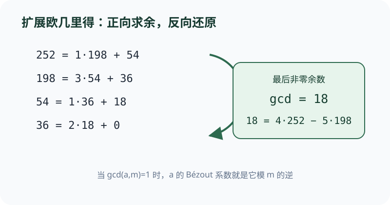
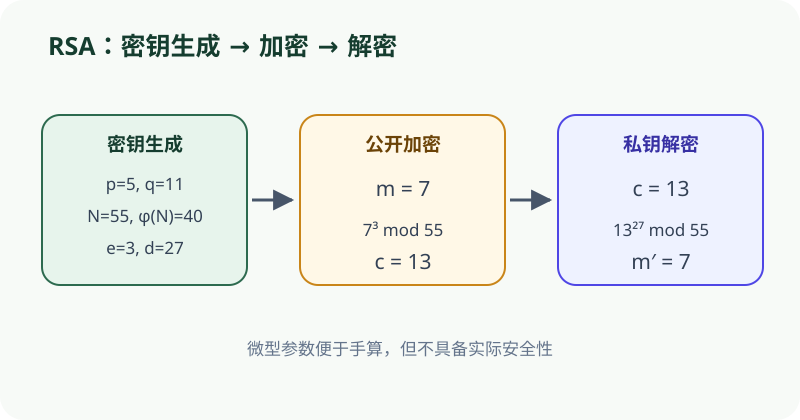

先正向求余，再反向代入；这正是从最大公因数走到模逆的桥梁。
依据本地课程资料 discussion/dis03b.pdf 重绘；交互用于解释概念，不替代题面或证明。

CS70 · 第 5 讲
从模逆与 Bézout 恒等式出发，系统讲解扩展欧几里得算法的递归与迭代实现、中国剩余定理的基元构造法、Fermat 小定理与 Euler 定理的群论直觉，并最终建立 RSA 公钥密码方案的数论基础，涵盖标准 RSA、多素数 RSA、单素数 RSA 与共模攻击。
设整数 \(a, m\) 且 \(m > 0\)。若存在整数 \(x\) 使得 \(ax \equiv 1 \pmod{m}\)，则称 \(x\) 是 \(a\) 模 \(m\) 的乘法逆元（简称模逆），记作 \(a^{-1} \equiv x \pmod{m}\)。
存在定理。 \(a\) 模 \(m\) 有逆元当且仅当 \(\gcd(a, m) = 1\)。
证明分两个方向：
\((\Rightarrow)\) 若 \(ax \equiv 1 \pmod{m}\)，则 \(ax - 1 = km\)，即 \(ax + m(-k) = 1\)。因此 \(\gcd(a,m)\) 整除 1，故 \(\gcd(a,m)=1\)。
\((\Leftarrow)\) 若 \(\gcd(a,m)=1\)，由 Bézout 恒等式存在整数 \(x, y\) 使得 \(ax + my = 1\)。取模 \(m\) 即得 \(ax \equiv 1 \pmod{m}\)。
唯一性。 若 \(x, x'\) 都是 \(a\) 模 \(m\) 的逆元，则 \(ax \equiv ax' \equiv 1 \pmod{m}\)。两边同乘 \(x\) 得 \(x(ax') \equiv x \pmod{m}\)，即 \(x \equiv x' \pmod{m}\)。故模逆在模 \(m\) 下唯一。
重要推论。 当模 \(p\) 为素数时，所有非零元 \(a \in \{1, 2, \dots, p-1\}\) 都有模逆。这为素数模下的"除法"提供了基础。
注意：当 \(\gcd(a,m) \neq 1\) 时，同余方程 \(ax \equiv b \pmod{m}\) 不一定能在两边"消去"\(a\)。例如 \(2x \equiv 4 \pmod{12}\) 的解为 \(x \equiv 2 \pmod{6}\) 而非 \(x \equiv 2 \pmod{12}\)，因为 2 在模 12 下没有逆元。
判断 9 在模 26 下是否有逆元，若有则求出。
存在性判断。 用欧几里得算法： \[ 26 = 2 \cdot 9 + 8,\quad 9 = 1 \cdot 8 + 1,\quad 8 = 8 \cdot 1 + 0 \] 故 \(\gcd(9, 26) = 1\)，逆元存在。
Bézout 系数。 回代： \[ 1 = 9 - 1 \cdot 8 = 9 - 1 \cdot (26 - 2 \cdot 9) = 3 \cdot 9 - 1 \cdot 26 \] 所以 \(9^{-1} \equiv 3 \pmod{26}\)。
验证。 \(9 \cdot 3 = 27 \equiv 1 \pmod{26}\)。
扩展欧几里得算法（Extended Euclidean Algorithm）在计算 \(\gcd(a,b)\) 的同时，给出 Bézout 系数 \(x, y\) 使得 \(ax + by = \gcd(a,b)\)。当 \(\gcd(a,m)=1\) 时，该算法直接给出模逆。
递归版本。
基础情形：\(\gcd(a, 0) = a = a \cdot 1 + b \cdot 0\)。
递归步骤：设 \(a = qb + r\)（其中 \(q = \lfloor a/b \rfloor\)），先递归求出 \(bx' + ry' = \gcd(b,r)\)。代入 \(r = a - qb\) 得： \[ \gcd = bx' + (a - qb)y' = ay' + b(x' - qy') \] 故系数 \((x, y) = (y', x' - qy')\)。
迭代版本。 维护一组方程，每步将较大 LHS 的方程减去较小 LHS 方程的 \(q\) 倍（\(q = \lfloor \text{LHS}_{\text{大}} / \text{LHS}_{\text{小}} \rfloor\)），保持每个 LHS 始终是原始 \(a, b\) 的线性组合，直到 LHS 等于 \(\gcd(a,b)\)。
两种版本结果一致。迭代版在实现上通常更快，且同时完成了正向化简与反向回代。
读出模逆。 若算法终态为 \(1 = ax + my\)，则 \(x\) 即 \(a^{-1} \pmod{m}\)。
求 \(\gcd(70, 27)\) 并表示为 \(70x + 27y\)，再求 \(27^{-1} \pmod{70}\)。
迭代过程。 \[ \begin{aligned} E_1: &\quad 70 = 1 \cdot 70 + 0 \cdot 27 \\ E_2: &\quad 27 = 0 \cdot 70 + 1 \cdot 27 \\ E_3 = E_1 - 2E_2: &\quad 16 = 1 \cdot 70 - 2 \cdot 27 \quad (70 = 2 \cdot 27 + 16) \\ E_4 = E_2 - 1E_3: &\quad 11 = -1 \cdot 70 + 3 \cdot 27 \quad (27 = 1 \cdot 16 + 11) \\ E_5 = E_3 - 1E_4: &\quad 5 = 2 \cdot 70 - 5 \cdot 27 \quad (16 = 1 \cdot 11 + 5) \\ E_6 = E_4 - 2E_5: &\quad 1 = -5 \cdot 70 + 13 \cdot 27 \quad (11 = 2 \cdot 5 + 1) \end{aligned} \]
故 \(\gcd(70, 27) = 1 = -5 \cdot 70 + 13 \cdot 27\)。
模逆。 \(27^{-1} \equiv 13 \pmod{70}\)。验证：\(27 \cdot 13 = 351 = 5 \cdot 70 + 1 \equiv 1 \pmod{70}\)。
中国剩余定理（CRT）。 设 \(m_1, m_2, \dots, m_k\) 两两互素，\(M = m_1 m_2 \cdots m_k\)。则对任意整数 \(a_1, a_2, \dots, a_k\)，同余方程组 \[ x \equiv a_i \pmod{m_i} \quad (i = 1, \dots, k) \] 在模 \(M\) 下有唯一解。
基元构造法。 对每个 \(i\)，令 \(M_i = M / m_i\)。由于 \(m_i\) 与其他所有模数互素，\(\gcd(M_i, m_i) = 1\)，故 \(M_i\) 在模 \(m_i\) 下有逆元 \(t_i\)。令 \(b_i = M_i \cdot t_i\)，则：
\(b_i \equiv 1 \pmod{m_i}\)（因为 \(M_i t_i \equiv 1\)）；
\(b_i \equiv 0 \pmod{m_j}\) 对 \(j \neq i\)（因为 \(M_i\) 含因子 \(m_j\)）。
于是 \(x \equiv \sum_{i=1}^k a_i b_i \pmod{M}\) 满足所有同余式。
两两互素条件的必要性。 若某对模数不互素，方程组可能无解。例如 \(x \equiv 3 \pmod{16}\) 与 \(x \equiv 4 \pmod{6}\) 矛盾：前者蕴含 \(x \equiv 1 \pmod{2}\)，后者蕴含 \(x \equiv 0 \pmod{2}\)。
CRT 在 RSA 解密优化（分别模 \(p, q\) 计算）与素数稀疏性证明中都有直接应用。
求解 \(x \equiv 2 \pmod{5}\)，\(x \equiv 3 \pmod{7}\)，\(x \equiv 1 \pmod{3}\)。
参数。 \(M = 5 \cdot 7 \cdot 3 = 105\)。
基元。
\(M_1 = 21\)，\(21^{-1} \equiv 1^{-1} \equiv 1 \pmod{5}\)，\(b_1 = 21 \cdot 1 = 21\)；
\(M_2 = 15\)，\(15^{-1} \equiv 1^{-1} \equiv 1 \pmod{7}\)，\(b_2 = 15 \cdot 1 = 15\)；
\(M_3 = 35\)，\(35^{-1} \equiv 2^{-1} \equiv 2 \pmod{3}\)（\(2 \cdot 2 = 4 \equiv 1\)），\(b_3 = 35 \cdot 2 = 70\)。
合成。 \[ x \equiv 2 \cdot 21 + 3 \cdot 15 + 1 \cdot 70 = 42 + 45 + 70 = 157 \equiv 52 \pmod{105} \]
验证。 \(52 \bmod 5 = 2\)，\(52 \bmod 7 = 3\)，\(52 \bmod 3 = 1\)。全部成立。
Fermat 小定理（FLT）。 设 \(p\) 为素数，则对所有整数 \(a\)，有 \[ a^p \equiv a \pmod{p} \] 等价地，当 \(\gcd(a,p)=1\) 时，\(a^{p-1} \equiv 1 \pmod{p}\)。
证明思路。 考虑集合 \(S = \{1, 2, \dots, p-1\}\)。乘以 \(a\) 得 \(a \cdot S = \{a \cdot 1, a \cdot 2, \dots, a \cdot (p-1)\} \bmod p\)。由于 \(\gcd(a,p)=1\)，映射 \(x \mapsto ax\) 是 \(S\) 上的双射，故 \(a \cdot S\) 是 \(S\) 的一个排列。两集合乘积相等： \[ (p-1)! \equiv a^{p-1} \cdot (p-1)! \pmod{p} \] 消去 \((p-1)!\)（与 \(p\) 互素）即得 \(a^{p-1} \equiv 1 \pmod{p}\)。
Euler 函数。 \(\varphi(n) = |\{i : 1 \le i \le n, \gcd(n,i)=1\}|\)。若 \(n = p_1^{e_1} \cdots p_k^{e_k}\)，则 \[ \varphi(n) = n \prod_{i=1}^k \frac{p_i - 1}{p_i} = \prod_{i=1}^k p_i^{e_i-1}(p_i - 1) \]
Euler 定理。 若 \(\gcd(a,n)=1\)，则 \(a^{\varphi(n)} \equiv 1 \pmod{n}\)。
证明。 类似 FLT，考虑模 \(n\) 的既约剩余系 \(R = \{m_1, \dots, m_{\varphi(n)}\}\)。乘以 \(a\) 后 \(aR\) 仍是既约剩余系的排列，乘积相等，消去即得。
FLT 是 Euler 定理当 \(n=p\) 为素数时的特例（\(\varphi(p)=p-1\)）。两定理共同构成 RSA 正确性的核心工具。
例 1（FLT 化简模幂）。 计算 \(7^{100} \bmod 13\)。
\(p = 13\)，\(\gcd(7,13)=1\)，故 \(7^{12} \equiv 1 \pmod{13}\)。 \[ 100 = 8 \cdot 12 + 4 \implies 7^{100} \equiv (7^{12})^8 \cdot 7^4 \equiv 7^4 \pmod{13} \] \(7^2 = 49 \equiv 10\)，\(7^4 \equiv 100 \equiv 9 \pmod{13}\)。故 \(7^{100} \equiv 9\)。
例 2（Euler 函数）。 计算 \(\varphi(60)\)。
\(60 = 2^2 \cdot 3 \cdot 5\)，故 \[ \varphi(60) = 60 \cdot \frac{1}{2} \cdot \frac{2}{3} \cdot \frac{4}{5} = 60 \cdot \frac{8}{30} = 16 \] 对 \(\gcd(7,60)=1\)，有 \(7^{16} \equiv 1 \pmod{60}\)。
密钥生成。 选两大素数 \(p, q\)，计算 \(N = pq\) 和 \(\varphi(N) = (p-1)(q-1)\)。选加密指数 \(e\) 满足 \(\gcd(e, \varphi(N))=1\)，用扩展欧几里得算法求解密指数 \(d \equiv e^{-1} \pmod{\varphi(N)}\)。公钥为 \((N, e)\)，私钥为 \(d\)。
加密。 对明文 \(x \in \{0, 1, \dots, N-1\}\)，密文 \(E(x) = x^e \bmod N\)。
解密。 对密文 \(y\)，明文 \(D(y) = y^d \bmod N\)。
正确性证明。 需证 \(x^{ed} \equiv x \pmod{N}\)。由 \(ed \equiv 1 \pmod{\varphi(N)}\)，设 \(ed = 1 + k \cdot \varphi(N)\)。分两种情况：
若 \(p \mid x\)，则 \(x \equiv 0 \pmod{p}\)，故 \(x^{ed} \equiv 0 \equiv x \pmod{p}\)。
若 \(p \nmid x\)，由 FLT：\(x^{p-1} \equiv 1 \pmod{p}\)，故 \[ x^{ed} = x \cdot (x^{p-1})^{k(q-1)} \equiv x \pmod{p} \] 同理 \(x^{ed} \equiv x \pmod{q}\)。由 CRT 得 \(x^{ed} \equiv x \pmod{N}\)。
注意。 \(e\) 必须与 \(\varphi(N)\) 互素。由于 \(p, q\) 为奇素数时 \(\varphi(N) = (p-1)(q-1)\) 必为偶数，故 \(e\) 绝不能取偶数（特别是 \(e=2\) 不可用）。
设 \(p=3, q=11, e=3\)。
密钥。 \(N = 33\)，\(\varphi(N) = 2 \cdot 10 = 20\)。\(d = 3^{-1} \bmod 20 = 7\)（\(3 \cdot 7 = 21 \equiv 1\)）。公钥 \((33, 3)\)，私钥 \(7\)。
加密。 明文 \(x = 5\)： \[ 5^3 = 125 = 3 \cdot 33 + 26 \equiv 26 \pmod{33} \]
解密。 计算 \(26^7 \bmod 33\)： \[ \begin{aligned} 26^2 &= 676 = 20 \cdot 33 + 16 \equiv 16 \\ 26^4 &\equiv 16^2 = 256 = 7 \cdot 33 + 25 \equiv 25 \\ 26^7 &= 26^4 \cdot 26^2 \cdot 26 \equiv 25 \cdot 16 \cdot 26 \\ 25 \cdot 16 &= 400 = 12 \cdot 33 + 4 \equiv 4 \\ 4 \cdot 26 &= 104 = 3 \cdot 33 + 5 \equiv 5 \pmod{33} \end{aligned} \] 恢复明文 \(5\)。
共模攻击（共享素因子）。 若两 RSA 模数 \(N_1 = p \cdot q_1\) 与 \(N_2 = p \cdot q_2\) 共享素因子 \(p\)，则 \(\gcd(N_1, N_2) = p\) 可在多项式时间（欧几里得算法）求出，从而分解两模数。因此不同 RSA 实例绝不能共享素因子。
同指数广播攻击（Håstad）。 同一消息 \(x\) 用相同 \(e\) 但不同模数 \(N_1, N_2, N_3\)（两两互素）加密，攻击者得到 \(x^e \bmod N_i\)。用 CRT 可求 \(x^e \bmod (N_1 N_2 N_3)\)。若 \(x^e < N_1 N_2 N_3\)（如 \(e=3\) 且 \(x\) 较小），可直接开 \(e\) 次方得 \(x\)。
小消息空间攻击。 若明文空间小（如 \(0\) 到 \(100\)），攻击者可预计算所有可能密文并与截获密文比对。
单素数 RSA（\(N=p\)）。 用 \(\varphi(N) = p-1\) 替代 \((p-1)(q-1)\)。正确性证明类似，但安全性降低（\(N\) 为素数易被检测）。
多素数 RSA（\(N=pqr\)）。 选 \(e\) 与 \((p-1)(q-1)(r-1)\) 互素，\(d \equiv e^{-1} \pmod{(p-1)(q-1)(r-1)}\)。正确性证明需分别验证 \(x^{ed} - x\) 被 \(p, q, r\) 整除：若某素因子整除 \(x\) 则显然；否则用 FLT。
共模攻击演示。 设 \(N_1 = 77 = 7 \cdot 11\)，\(N_2 = 143 = 7 \cdot 13\)。
用欧几里得算法： \[ 143 = 1 \cdot 77 + 66,\quad 77 = 1 \cdot 66 + 11,\quad 66 = 6 \cdot 11 + 0 \] 故 \(\gcd(77, 143) = 11\)。于是 \(p = 11\)，\(q_1 = 77/11 = 7\)，\(q_2 = 143/11 = 13\)。两模数均被完全分解。
教训： 不同 RSA 密钥对必须独立生成素因子，避免任何共享。
依据本地课程资料 discussion/dis03b.pdf 重绘；交互用于解释概念，不替代题面或证明。

依据本地课程资料 discussion/dis04a.pdf 与 homework/hw04.pdf 重绘；交互用于解释概念，不替代题面或证明。

只有当 \(\gcd(a,m)=1\) 时才能消去 \(a\)。若 \(\gcd(a,m) \neq 1\)，需将同余式与模数同时除以 \(\gcd(a,m)\)，且解的模数会缩小。例如 \(2x \equiv 4 \pmod{12}\) 等价于 \(x \equiv 2 \pmod{6}\) 而非 \(\pmod{12}\)。
CRT 的核心条件是模数两两互素，而非每个模数都是素数。例如模数 4 与 9 不互素于同一素因子，但 \(\gcd(4,9)=1\)，CRT 仍适用。
\(e\) 必须与 \(\varphi(N) = (p-1)(q-1)\) 互素，否则私钥 \(d\) 不存在。特别地，当 \(p, q\) 为奇素数时 \(\varphi(N)\) 为偶数，故 \(e\) 绝不能取偶数。
该形式仅当 \(\gcd(a,p)=1\) 时成立。若 \(p \mid a\)，则 \(a^{p-1} \equiv 0 \pmod{p}\)。更一般的形式是 \(a^p \equiv a \pmod{p}\)，对所有整数 \(a\) 成立。
欧几里得算法可在多项式时间计算 \(\gcd(N_1, N_2)\) 并得到共享素因子。这是共模攻击的核心，说明不同 RSA 实例必须独立选择素因子。
问题：设 \(m\) 为正整数。关于整数 \(a\) 模 \(m\) 的乘法逆元，下列哪项正确？
问题：关于中国剩余定理，下列哪项是其模乘积意义下唯一解存在的关键条件？
问题：在 RSA 中，设 \(N = pq\)，\(ed \equiv 1 \pmod{\varphi(N)}\)。对于满足 \(p \mid x\) 的明文 \(x\)，证明 \(x^{ed} \equiv x \pmod{N}\) 的关键步骤是：
问题：关于 Fermat 小定理 \(a^{p-1} \equiv 1 \pmod{p}\)，下列哪项表述最准确？
discussion/dis03b.pdf · 1-2 · confidence: high · We get that the multiplicative inverse of 17 mod 54 is −19, or 35. Note that −19 ≡ 35 mod 54.discussion/dis03b.pdf · 3-5 · confidence: high · bi = (M/mi) · [(M/mi)^−1 mod mi], where M = m1·m2·...·mk. The solution can then be computed by x ≡ Σ ai bi (mod M).homework/hw04.pdf · 1 · confidence: high · 130 = 2 × 5 × 13. Since 2, 5, and 13 are prime, we can apply Fermat's Little Theorem.homework/hw04.pdf · 2 · confidence: high · φ(n) = n ∏_{i=1}^k (p_i - 1)/p_i.discussion/dis04a.pdf · 2 · confidence: high · gcd(p1q1, p1q2) = p1. Taking GCDs is actually an efficient operation thanks to the Euclidean Algorithm.discussion/dis04a.pdf · 2 · confidence: high · Eve observes x^3 (mod N1), x^3 (mod N2), x^3 (mod N3). Since all N1, N2, N3 are pairwise relatively prime, Eve can use the Chinese Remainder Theorem to figure out x^3 (mod N1N2N3).cs70-cheatsheet.pdf · Note 6-7 · confidence: medium · a has inverse mod m iff gcd(a,m) = 1; scheme for primes pq find e coprime to (p-1)(q-1); public key (N,e); private key d; decryption y = m^d mod N.